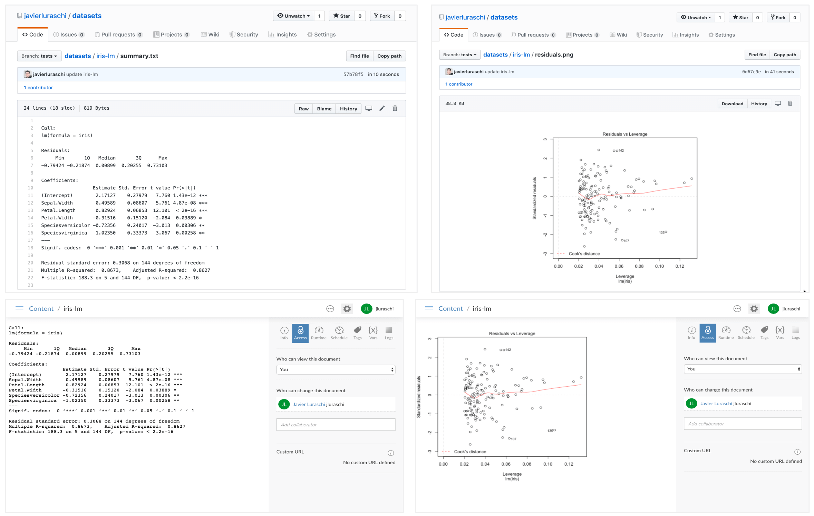

When you use pin(), the object being pinned (say, the data frame, list, matrix, etc) is serialized as an RDS file, a format native to R. This allows you to easily reload pins with pin_get() and have certainty that the object is exactly the same; however, this might not be ideal when sharing with others that might not use R as their primary environment or even if they are, it is convenient to preview what the pin contains when to easily discover resources.
Therefore, pins allows you to customize how a pin is stored by implementing a pin() S3 method for your particular object. As the Understanding Boards boards article mentions, a board is a storage location and is the job of pin() to persist the object. For your particular pin() implementation, you should call board_pin_store() as the last step to push the files associated to your pin into the board the user is requesting to use.
Similarly, you will need to implement pin_load() for that particular object ‘type’ to reload the object. When implementing pin_load(), it is encouraged to also fallback when the serialized R object is not present, this allows others to create pins in other environments and programming languages.
To make this clear, consider the following example where we use a pin to share a fitted models with colleagues:
Call:
lm(formula = iris)
Coefficients:
(Intercept) Sepal.Width Petal.Length Petal.Width Speciesversicolor Speciesvirginica
2.1713 0.4959 0.8292 -0.3152 -0.7236 -1.0235 Although this works without the need to define a custom pin, we can do a bit better by considering what others might be interested in accessing from outside R or while discovering resources. The following example extends objects of type lm, to save additional metadata.
The following example creates a custom pin for a linear model produced with lm, it enhances the default pin by adding a summary in plain text, a residuals plot and the original formula as metadata which other systems can read without using R.
pin.lm <- function(x, name = NULL, description = NULL, board = NULL, ...) {
path <- tempfile()
dir.create(path)
on.exit(unlink(path))
# save model
saveRDS(x, file.path(path, "model.rds"), version = 2)
# save summary
writeLines(capture.output(summary(lm(iris))), file.path(path, "summary.txt"))
# save residuals vs fitted plot
grDevices::png(file.path(path, "residuals.png"))
plot(x)
dev.off()
metadata <- list(
columns = list(formula = deparse(formula(x)))
)
board_pin_store(board, path, name, description, "linear_model", metadata, ...)
}
pin_load.linear_model <- function(path, ...) {
readRDS(file.path(path, "model.rds"))
}
pin_preview.linear_model <- function(x, ...) {
x
}Note: The metadata$columns parameter is used to extract columns in RStudio’s Connection viewer, if one is not specified, RStudio will display unknown.
Once defined, you can pin this model in any board you’ve previously registered,
model <- lm(iris)
# pin to local board
pin(model, name = "iris-lm")
# pin to github
pin(model, name = "iris-lm", board = "github")
# pin to rstudio connect
pin(model, name = "iris-lm", board = "rsconnect")Call:
lm(formula = iris)
Coefficients:
(Intercept) Sepal.Width Petal.Length Petal.Width Speciesversicolor Speciesvirginica
2.1713 0.4959 0.8292 -0.3152 -0.7236 -1.0235 Since additional metadata is being stored, other users can preview or access subsets of this models without having to reload it themselves. For instance, you can access those additional resources from GitHub or RStudio Connect:
